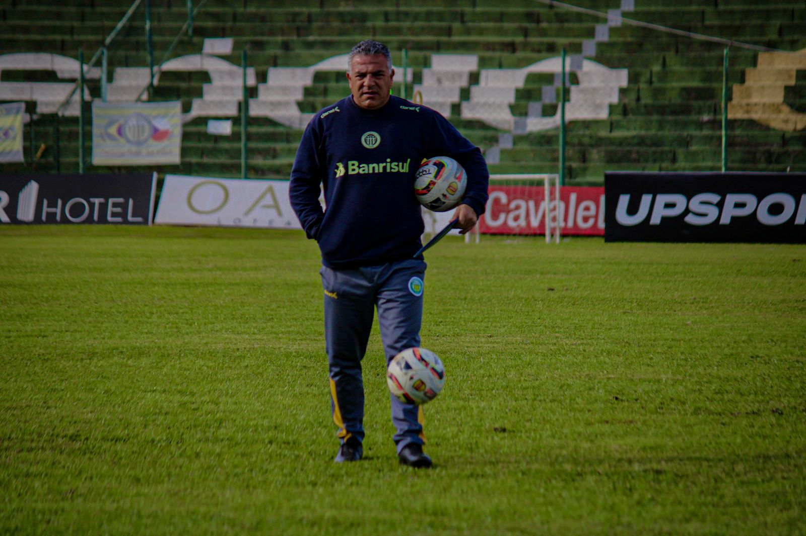
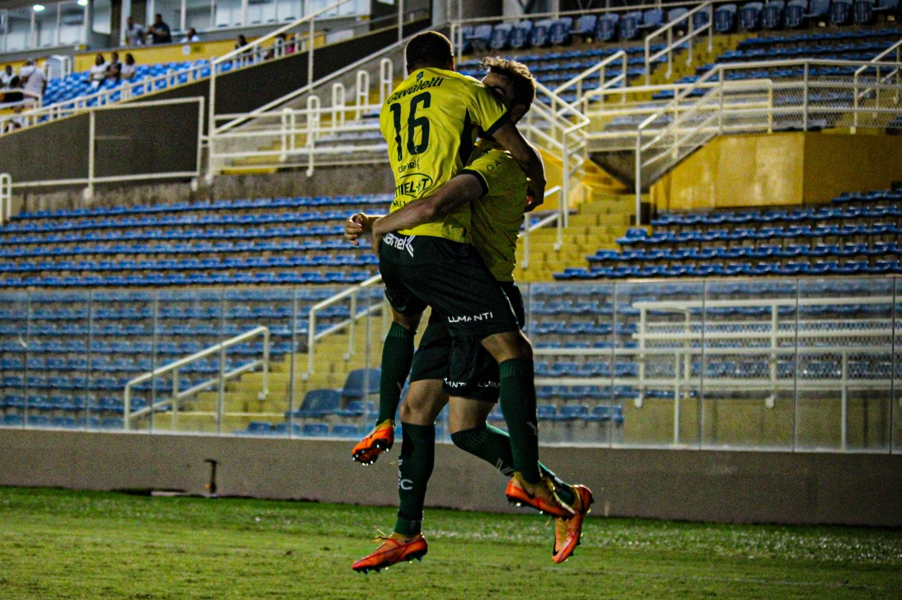

Na casamata ypiranguista desde o início de 2022, Luizinho Vieira falou sobre a temporada, o mercado de transferências e mostrou entusiasmo para o ano que antecede o centenário do clube.
Ultimas Notícias


Jogando fora de casa, no Presidente Vargas, em Fortaleza (CE), o Canarinho venceu o Ferroviário, por 2 a 1, na última rodada da 1a fase do Brasileirão Série C
Jogando fora de casa, no Presidente Vargas, em Fortaleza (CE), o Canarinho venceu o Ferroviário, por 2 a 1, na última rodada da 1a fase do Brasileirão Série C
| Gauchão 2022 | ||||
|---|---|---|---|---|
| Coloc. | Clubes | Pts | Pj | VIT |
| 1º | Grêmio | 24 | 11 | 7 |
| 2º | Internacional | 23 | 11 | 7 |
| 3º | Juventude | 17 | 11 | 5 |
| 4º | Caxias | 17 | 11 | 4 |
| 5º | Yipiranga | 16 | 11 | 4 |
| 6º | São José | 15 | 11 | 4 |
| 7º | Aimoré | 14 | 11 | 4 |
| 8º | São Luiz | 13 | 11 | 3 |
| 9º | Brasil de Pelotas | 12 | 11 | 3 |
| 10º | Esportivo | 9 | 11 | 2 |